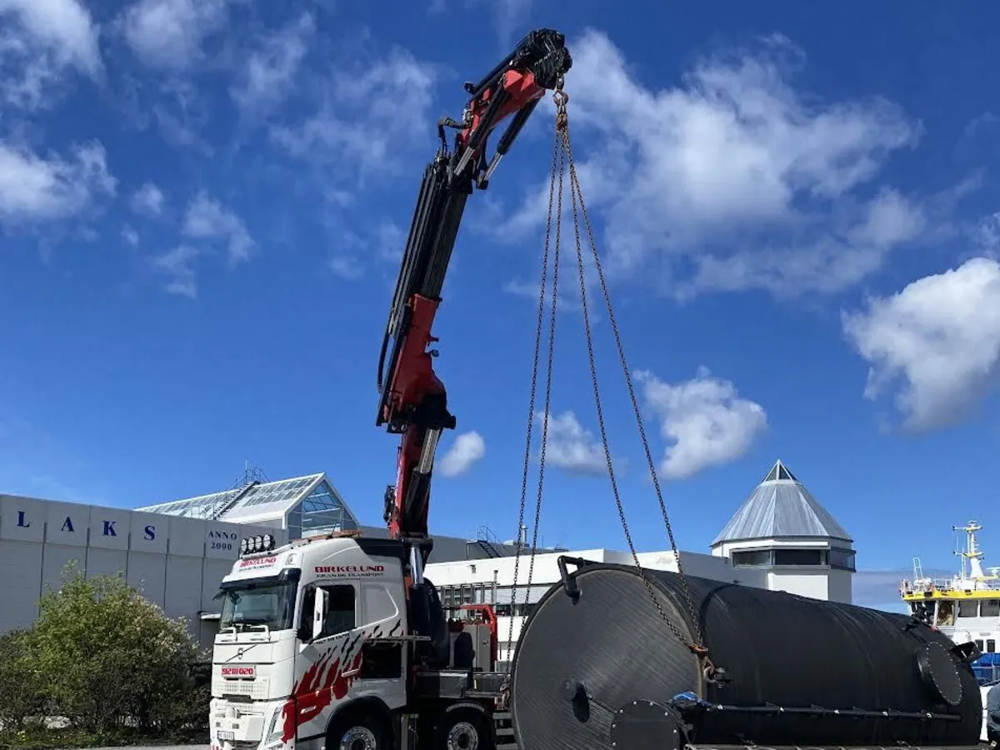

Kraning og transport · Ålesund
Din partner når kvalitet teller.
Trygghet, punktlighet og presisjon i alle løft og transporter. Vi har over 30 års erfaring innen kran- og transportbransjen.
30+ årErfaring
4Kranbiler
50–95Tonnmeter
Hele NorgeVia partnere
Tjenester
Kran og transport
Ingen oppdrag er for små, og ingen er for store.
Kraning
Løft med kranbil, tilpasset oppdraget.
Transport av båter, brakker m.m.
Transport av store og spesielle gjenstander.
Containertransport
Utkjøring og henting av containere.
Byggvaretransport
Levering av byggvarer til byggeplass.
Oppdrag i hele landet
Via samarbeidspartnere.
Be om pris
Fortell oss om oppdraget.

Om oss
Over 30 års erfaring
Vi holder til i Ålesund, men via våre samarbeidspartnere tar vi på oss oppdrag i hele landet.
Våre dyktige sjåfører sørger for at jobben utføres på en trygg og effektiv måte.
- Trygghet i alle løft.
- Punktlighet på tid.
- Presisjon i utførelsen.
4Kranbiler
2 × 50Tonnmeter
2 × 95Tonnmeter
Hele NorgeVia partnere
Har dere et løft eller en transport?
Ring, så avklarer vi oppdraget raskt.